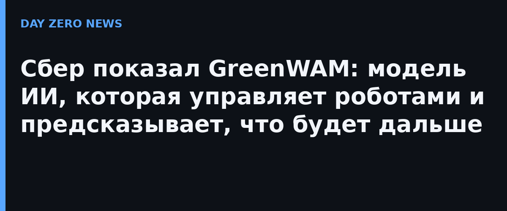

Сбер представил GreenWAM — модель искусственного интеллекта, которая умеет формировать команды для робота и предсказывать, как изменится окружающая сцена после его движений. Разработка объединяет две способности: моделирование происходящего и управление действиями. Идеей поделились в самом Сбере, о чём сообщили ТАСС, CNews, «Независимая газета» и Gazeta.ru.
GreenWAM продолжает направление исследований Сбера в области ИИ для роботов, к которому относится и известная модель Green-VLA. В новой работе акцент сделан на предсказании последствий действий: модель одновременно учится управлять роботом при выполнении задания и предсказывать, как изменится мир в результате. По словам разработчиков, в прогнозе и в управлении GreenWAM показывает результаты на уровне ведущих мировых разработок, причём одна способность усиливает другую.
Модель обучили на данных 20 семейств роботов — от двуруких манипуляторов до антропоморфных роботов с кистями. Действия всех роботов описали в едином представлении, а в архитектуру добавили отдельный модуль выбора действий. По заданным действиям робота GreenWAM способна предсказать до минуты видео.
В международном тесте WorldArena 1.0 модель показала второй результат среди 128 моделей рейтинга по сходству прогноза с реальной записью и точнее воспроизвела геометрию сцены, чем модели мира NVIDIA, Стэнфордского университета и AgiBot. В тесте управления RoboTwin 2.0 доля успешно выполненных задач составила 67,5% против 58,4% у π0.5 от Physical Intelligence, а в знакомых для модели условиях — 87%: выше этого результата в официальном рейтинге лишь две модели. В тесте LIBERO-plus, где роботу меняют освещение, положение камер, фон и формулировку команды, GreenWAM без дополнительного обучения выполнила 86,8% задач.
Модель испытали и на человекоподобном роботе Грине, которого создал сам Сбер. По сравнению с моделью NVIDIA Cosmos 3 Edge, обученной на тех же данных, доля успешно выполненных задач выросла с 88,9% до 95,6% в знакомых для модели условиях. За рубежом физическим ИИ сейчас плотно занимаются Physical Intelligence, NVIDIA и Figure — показательно, что российская команда выходит на их арене с собственным результатом и сравнивает себя напрямую с их моделями.
Отдельного пресс-релиза на сайте Сбера на момент выпуска найти не удалось — все издания ссылаются на анонс компании напрямую; цифры в статье приведены по официальным заявлениям Сбера.